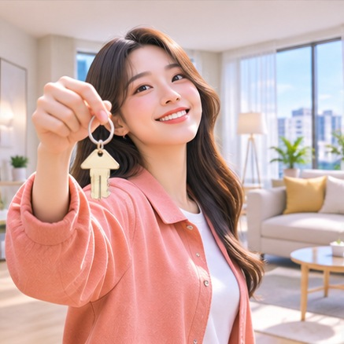
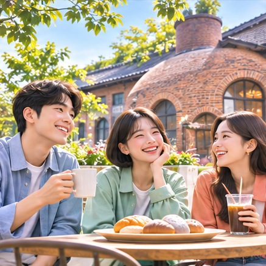

CHEONAN YOUTH POLICY · 2026
청년의 미래가
빛나는 도시,
천안.
일자리부터 첫 집, 새로운 배움까지.
천안의 청년 정책을 숫자와 실제 프로그램으로 만나보세요.
2025년 5월 말 청년인구 · 전체 인구의 29.9%
01 / WATCH THE STORY
청년의 오늘,
천안의 내일 🎬
약 10초의 영상으로 먼저 느껴보는 천안 청년의 가능성
02 / THE NUMBERS
천안 시민 10명 중 약 3명은 청년
2025년 5월 31일 주민등록 기준, 만 18~39세 청년의 모습을 살펴보세요.
연령대별 청년 인구
단위: 명자료: 천안시 2025 청년통계 조사 관련 보도 (기사 보기)
03 / WHY CHEONAN?
청년은 왜
천안에 올까요?
2024년 청년 인구이동을 보면 꼭 필요한 정책 영역이 보입니다.
직업 32.0%
청년이 천안으로 전입한 이유 중 ‘직업’이 차지하는 비율입니다.
출처: 2024년 청년 인구이동 통계 관련 보도 · 인구 통계 기준연도와 다름
04 / JOB & CAREER
취업 준비,
혼자가 아니니까.
교육부터 기업 면접 연계까지 이어주는 천안형 청년채용연계 교육
총 50시간
기업 면접 연계
천안사랑카드
천안 거주 만 18~39세 미취업 청년 등
최소 40시간 교육 참여 + 연계 기업 면접 1회
과정별 이수·근속 조건에 따라 최대 350만 원
※ 채용을 확정하는 사업은 아닙니다. 2026년 채용연계 교육 모집은 종료되었습니다.

06 / FIRST HOME
월세 걱정은 덜고,
내일을 더 크게.
청년월세 지원은 소득과 주거 조건을 충족하면 실제 납부 월세 범위에서 지원합니다.
단순 상한 계산입니다. 실제 수급 여부와 금액은 자격 및 심사에 따라 결정됩니다.
부모와 별도 거주하는 만 19~34세 무주택 청년 · 독립가구 중위소득 60% 이하 등 소득·재산 심사
2026년 신청 기간(3/30~5/29) 종료. 차기 모집은 복지로 또는 주소지 행정복지센터 공고 확인.
07 / LEARN & GROW
오늘의 취미가
내일의 가능성으로.
천안청년센터 이음의 자기계발 프로그램 「배워유」에서 관심사를 탐색해보세요.
손으로 만들고 맛보며 새로운 기술과 일상의 즐거움을 쌓는 체험 분야입니다.
천안 거주·지역 대학 재학·재직·창업 청년(18~39세)
2026년 4~5월 안서 과정, 하반기 대흥 특별반 등 운영 사례. 프로그램별 모집 공고 확인 후 신청·선정.
※ 운영일과 선정방식은 반별로 다르며 종료된 과정은 재신청할 수 없습니다.

08 / CULTURE & COMMUNITY
함께할수록
커지는 아이디어.
오픈클래스부터 청년의 날 부스, 안서동 문화활동까지. 청년이 직접 행사를 만드는 청년방방 · 안서방방
청년방방 · 활동비
재능 오픈클래스와 청년의 날 부스 등 청년이 주도하는 활동을 지원합니다.
선정된 팀은 행사 운영 등 필수 활동 의무를 이행해야 합니다.
09 / YOUR NEXT STEP
청년의 꿈,
천안에서
시작하세요.
정책은 신청 조건을 확인하는 순간, 나에게 필요한 기회가 됩니다.
정보 기준: 청년인구 2025.05.31 / 정책 확인 2026.11.04.
사업별 자격·지원액·모집상태는 변경될 수 있으므로 반드시 최신 공식 공고를 확인하세요.